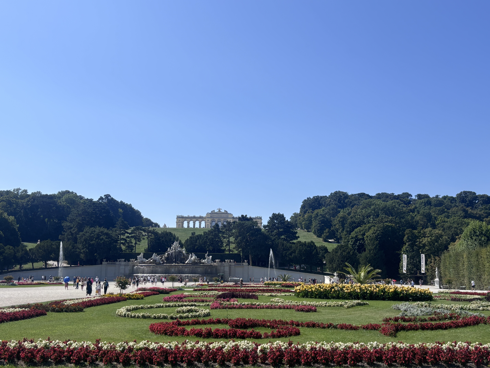
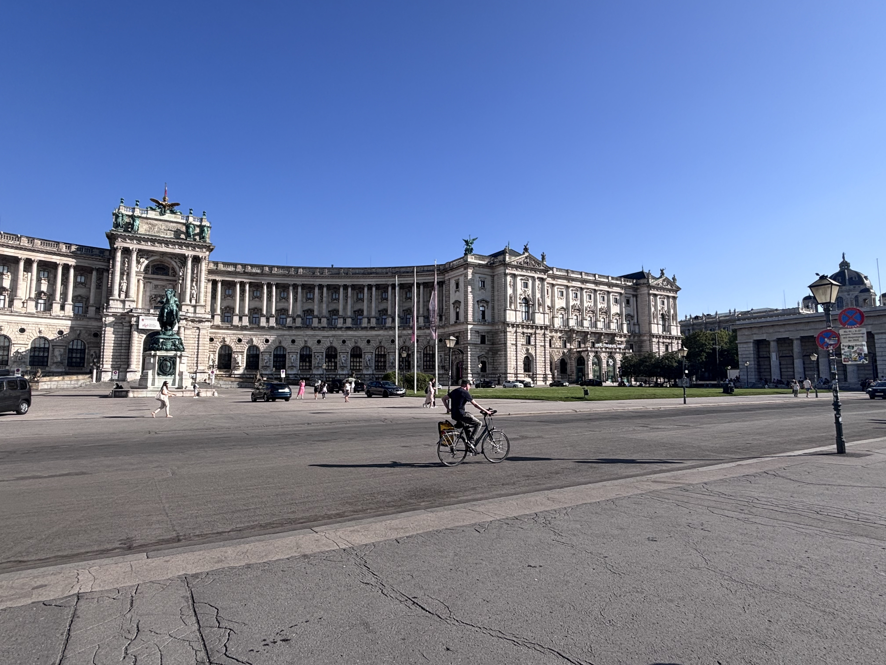
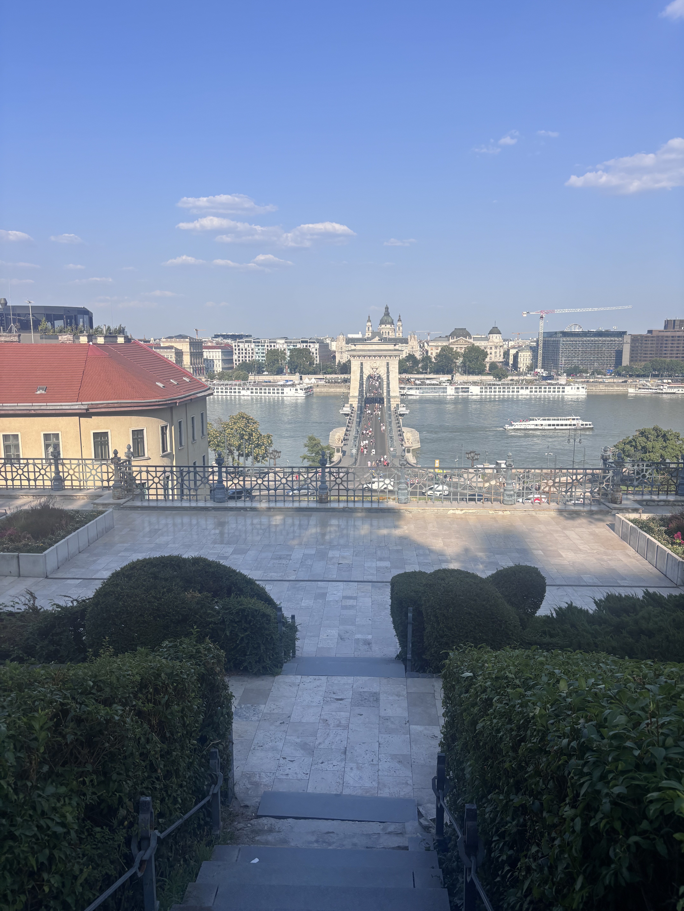

central europe - aug '25
Traveled with my grandparents and family for a 10-day trip across Central Europe, our first multi-country Europe trip together. We began in Prague, Czech Republic, where cobblestone streets, pastel Baroque buildings, and the scent of chimney cakes defined our days. We wandered through Prague Castle and St. Vitus Cathedral, watched the Astronomical Clock strike the hour in Old Town Square, and took a river cruise under the Charles Bridge. A day trip to Kutná Hora brought eerie fascination at the Sedlec Ossuary (the Bone Church) and breathtaking views from St. Barbara’s Cathedral.
Next, we took a train to Vienna, Austria, a city that felt like an open-air museum of marble and music. Between Belvedere Palace gardens, Hofburg’s imperial grandeur, and an indulgent slice of Sachertorte at Café Central, Vienna’s mix of elegance and history was unmatched. A day in the Wachau Valley offered monastery views from Melk Abbey, a serene boat cruise down the Danube, and a quiet walk through Dürnstein’s castle ruins overlooking the river.
Our journey continued to Budapest, Hungary, where the Parliament Building glittered along the Danube at sunset. We explored Fisherman’s Bastion and Matthias Church in Buda, soaked up Pest’s café culture, and admired the vastness of Heroes’ Square. A half-day trip to Szentendre brought colorful art alleys, ceramic studios, and lazy riverside strolls before returning to Budapest for an evening at Gellért Hill, watching the city across the bridges.
We wrapped up in Bratislava, Slovakia, a charming finale between grand capitals. The Old Town’s pastel lanes, the fairytale-like Michael’s Gate, and panoramic views from Bratislava Castle made for a relaxed close to the trip. We returned to Prague for our final night, walking across Charles Bridge one last time before saying goodbye over coffee at Café Savoy. A family trip that felt like a European postcard brought to life.









vietnam, thailand and cambodia - may '25
Joined a solo travelers' backpacking group for 2 weeks. We started in Bangkok, where highlights included cruising the Chao Phraya River, Chinatown, getting lost on local buses, savoring street Pad Thai + Tea, visiting Wat Pho, and day-tripping to Ayutthaya. I enjoyed an abundance of fresh rambutan and mangosteen along the way.
Next, I spent 9 days in Cambodia, discovering the magnificent Angkor Wat temples near Siem Reap, trying chilli-fried crickets in Phnom Penh, relaxing on the beaches of Koh Rong, and spending a night with the local farming community in Chambok. Standout moments included getting interrogated by Cambodian border control, a 4am wakeup for sunrise at Angkor Wat, a sombering experience at S-21 and the Killing Fields in Phnom Penh, and a stunningly-picteresque hike up to Chambok Canyon.
I also visited a traditional two-story straw cottage on the Cambodia countryside, where I enjoyed a delicious lunch of noodles and lemongrass-coconut chicken served on the floor.
Post Cambodia, I spent 3 days in Ho Chi Minh City, Vietnam, where I shopped till I dropped at Ben Thanh Market, Saigon Square, and Takashimaya. Book Street, the War Remnants Museum, Little Hanoi's Egg Coffee, and Banana pancakes w/ extra Sữa Ông Thọ condensed milk, made by my hostel hosts, were some highlights. I'm also very proud of my myself for crossing the road without getting run over, and managing to take an hour's local back to the aiport.


japan - mar '25
Spent my birthday week in Japan, averaging over 30,000 steps a day, 8 Shinkansen rides and 22 local trains — essentially a speedrun of public transit. I landed in Osaka, and took a day trip to Nara to stare at friendly deer, savor some delicious matcha ice cream, and explore Todai-ji. Evenings buzzed with the lively energy of Osaka’s Namba markets, where I devoured (octopus) takoyaki.
The next day, I caught the Shinkansen to Hiroshima and later a ferry to Miyajima. Along the way, I squeezed in thrift shopping at Mode-Off and stocked up on discount skincare at Matsumoto Kiyoshi—just before the tourist tax kicked in. I also got lost in the mountains near Waratenjinmae after dozing off on the bus—a surprising, yet welcome adventure. Hiroshima was deeply moving, with the Peace Memorial Park and Museum leaving a lasting impression. I enjoyed Hiroshima-style okonomiyaki and indulged in melon bread while watching the sunrise over Hiroshima Castle. On Miyajima Island, I caught the iconic Itsukushima Shrine’s torii gate magically floating as the tide came in.
Kyoto’s bamboo forest and Golden Pavilion were breathtaking. I had the best meal of my life—a katsu curry in Arashiyama—and later treated myself to warabi mochi in Kamakura.
Day four brought me to Tokyo, starting with the historic Asakusa district and Senso-ji Temple. I wandered Ueno Park and did some serious shopping, and then explored Nakano Broadway for vintage toys and treasures. A delicious ramen bowl in Harajuku fueled me for an evening in Shibuya, marveling at the famous crossing and finishing with late-night sushi.